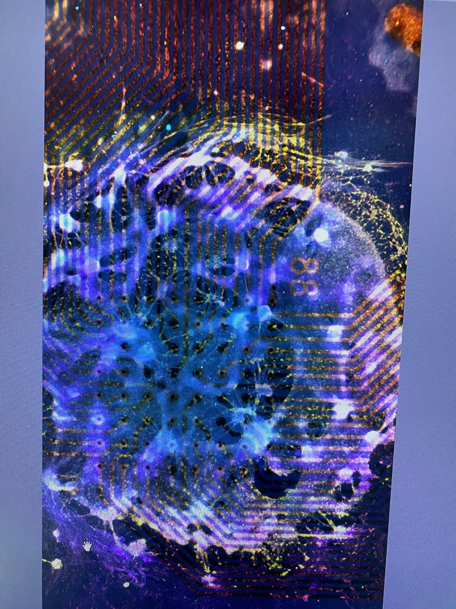
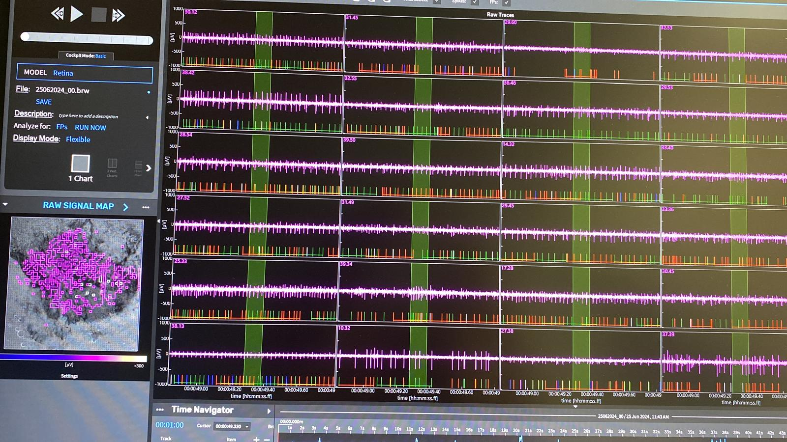

or: how I somehow ended up wanting to interface living neural systems with computers.
One of the reasons I wanted to study bioengineering was Transcendence.
The idea that biology, computation and human intelligence might somehow become entangled fascinated me long before I knew enough biology to understand how complicated that idea actually was.
At the time, the question was mostly science fiction: how far could the boundary between a biological mind and a machine actually be pushed?
I didn't know that this question would eventually become much more experimental.
During my Bachelor's in Bioengineering, I discovered organ-on-chip technology.
The idea immediately appealed to me: instead of treating cells simply as things growing in a dish, we could build controlled environments around them and reproduce aspects of real tissue physiology.
Then I encountered the even more ambitious idea of a patient-on-chip.
From there, I knew I wanted my research to stay somewhere around the interface between biological systems and engineered platforms.
That interest eventually brought me to neural electrophysiology.
At DZNE in Dresden, I worked with olfactory bulb–olfactory epithelium neural co-cultures and MEA electrophysiology.
Later, during my Master's research at TU Dresden / CRTD, I worked with adult zebrafish retina on HD-MEAs.
There was something fascinating about placing living neural tissue on a chip and being able to listen to its electrical activity.


Working with living preparations also taught me the less glamorous side of electrophysiology: keeping tissue viable, troubleshooting stimulation, dealing with biological variability, separating artifacts from responses and extracting useful information from noisy recordings.
But recording was only part of what interested me.
If we can record from a neural network, we can also give it input. We can stimulate it, change its environment and observe how it responds.
And eventually ask whether those responses themselves change with experience.
At first, I was interested in what we could record from living neural systems.
Eventually, I became more interested in what happens when the communication goes both ways.
A closed loop.
At that point, the electrode array is no longer simply measuring biology.
It becomes part of the environment the biological system is interacting with.
After my Master's, I joined MaxWell Biosystems.
Being surrounded by HD-MEA technology exposed me to applications far beyond the neural preparations I had worked with myself.
Somewhere in that world, I came across Organoid Intelligence.
It felt less like discovering a completely new subject and more like finding the point where several things I had already been interested in finally met.
What draws me to brain organoids is not only their potential as biological computational systems.
They also offer experimental models for studying human neural development and disease, including neurodegenerative processes, neurotoxicity and responses to pharmacological intervention.
For me, these directions are not entirely separate.
Whether the question is learning, disease progression or drug response, we still need to understand what neural networks are doing, how their activity changes over time, and how those changes can be measured and perturbed.
Organoid Intelligence interests me precisely because many of its most basic questions are still open.
[ some of these questions have answers. some have several. that's the interesting part. ]